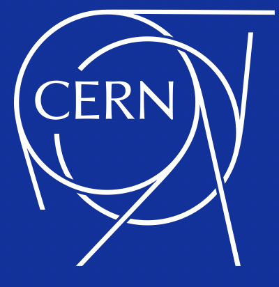
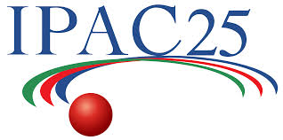
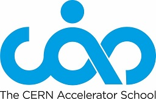
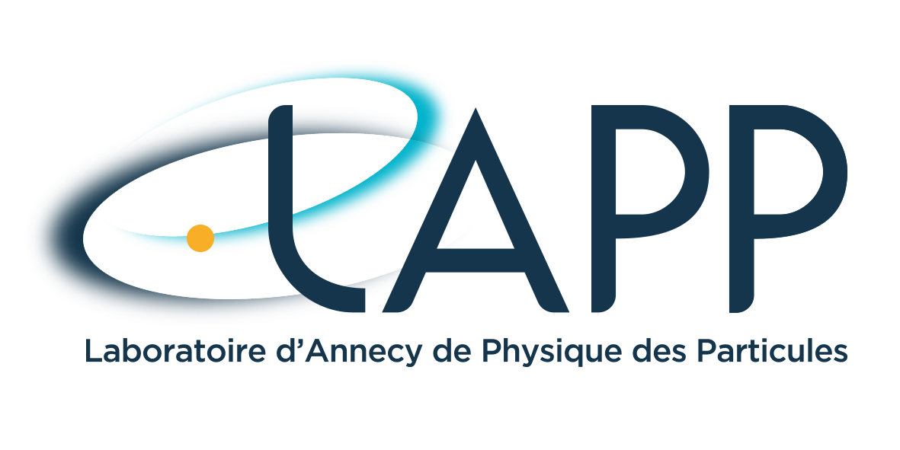

Applied Physicist with 4 years of experience at CERN, specializing in RF control systems and applied machine learning for real-time diagnostics on particle accelerators. Published researcher (IPAC'25 and IPAC'26) with hands-on experience deploying deep learning models on live accelerator infrastructure.

4 days of talks on ML implementation in particle accelerators all over the world.

Two weeks of lectures on particle accelerators (advanced topics) and hands-on laboratories on RF specific topics (e.g. VNA diagnostics, simple feedbacks, finding the resonant frequency).
Five days of lectures on particle accelerators (basic overview).
Project: “Machine Learning for betatron tune diagnostics and control on the Super Proton
Synchrotron (SPS) at CERN”.

Project: “Effective Field Theory (EFT) interpretation of the Drell-Yan (DY) proccess”,
ATLAS Collaboration (CERN experiment), see
presentation.
Particle physics simulations and analysis applying EFT, specific to
the ATLAS detector.